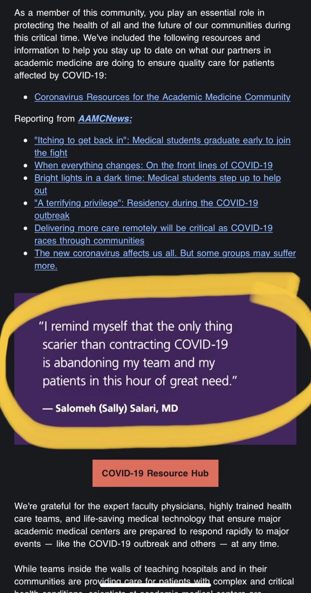

April 2026 author’s note: since the original publication of this article, 6 years ago, many links are no longer available. I have tried my best to find archived versions where possible, however some links may be broken.
The pandemic situation

Source: https://coronavirus.jhu.edu/map.html as of April 10, 2020 at 11:50AM.
I’ve been thinking about this deeply for the past couple of days. As the number of confirmed COVID-19 cases worldwide continues to climb above 1.6 million, the number of deaths is more than 100 times the number of deaths from the 2003 SARS outbreak and more than 4 times the number of deaths from the 2009 H1N1 swine flu pandemic. That makes the case-fatality rate (which is actually different from mortality) 5.77%. There are 161,807 cases in NYC alone. There is a shortage of medical staff, so much that final year medical students are being allowed to graduate early and doctors are coming out of retirement to volunteer. And looking at the graph in the bottom right corner of the Johns Hopkins dashboard, we are nowhere near close to the end.
I will be signing an Executive Order to allow medical students who were slated to graduate this spring to begin practicing now.
— Archive: Governor Andrew Cuomo (@NYGovCuomo) April 4, 2020
These are extraordinary times and New York needs the help.
There’s also a shortage of personal protective equipment (PPE). There are predefined levels of PPE for certain levels of exposure to COVID patients, as outlined by the Ontario Ministry of Health as well as the World Health Organization (WHO). We know COVID-19 is highly infectious and easily transmissible from person to person. For droplet and contact precautions (the main modes of coronavirus transmission), this includes a surgical/procedure mask, isolation gown, gloves, and eye protection (goggles or face shield). For aerosol-generating procedures (procedures which cause the novel coronavirus to be airborne), which includes high flow oxygen therapy, non-invasive positive pressure ventilation, airway suctioning/bronchoscopy, endotracheal intubation, and interestingly also autopsy, additional airborne precautions are required, which include an N95 respirator (fit-tested, seal-checked), and a negative pressure room if available. This is the standard of practice, a professional benchmark which carries legal implications.
How do we know there’s a PPE shortage? Last month the WHO called on “industry and governments to increase manufacturing by 40 per cent to meet rising global demand”. The US Food and Drug Administration dances around the question of whether there is a shortage, at the same time recommending strategies to conserve PPE. In Canada, Prime Minister Trudeau also hasn’t specified the extent of the shortage, but announced that the government was spending $2 billion on medical equipment including PPE last week. Ontario Premier Doug Ford has been more vocal about the shortage, and has announced $50 million to help ‘retool’ businesses to make PPE and ventilators. On April 2nd, the White House ordered the medical equipment manufacturing company 3M to cease exports to Canada and Latin America. After half a million masks destined for Ontario were held at the border, 3M reached a deal with the White House on April 6 that will allow them to continue supplying their Canadian and Latin American markets. Despite that, on April 6 Doug Ford has even gone as far to say that the current province’s PPE stockpiles will only last one week. Hospitals are keeping used masks and looking into ways of disinfecting and reusing them. Here in Hamilton, as with many other places, the city is calling for PPE donations to keep the shortage at bay.
We hit 3M hard today after seeing what they were doing with their Masks. “P Act” all the way. Big surprise to many in government as to what they were doing - will have a big price to pay!
— Donald J. Trump (@realDonaldTrump) April 3, 2020
“P act” = Defence Protection Act? Allows the president to control companies, including exporting goods.
A physician poll conducted by the Canadian Medical Association surveyed almost 5000 members from March 30-31, 2020 and found that 1) over a third of physicians in community care believe they will run out of PPE within 2 days or had already run out, 2) physicians in the community are having a difficult time ordering more PPE, and 3) most (75%) physicians in hospital settings were unaware of how long the current supply would last but were being asked to ration supplies.
Conclusions thus far:
- The novel coronavirus is very infectious and spreading extremely quickly.
- The peak of this pandemic is yet to come. There is increased demand for doctors.
- There’s a shortage of PPE which those doctors need for adequate standard protection.
Resident physicians: powerless to exploitation
Disclaimer: although residents in almost every system experience power imbalances, this next part is mostly referring to the private US system where the American residents are mostly non-unionized.
These are the facts. This is the situation. But you already knew this from the news. What really prompted this post was this Reddit post in r/residency.
The post is in r/Residency, with the title “UCSF Fresno sent this out to their IM residents apparently” with a screenshot of an email:

The poster added further context: “Obtained this from my sister who has former classmates there”. It reads like an email from the program director, who is Dr. Steven Tringali, DO. You can imagine some of the comments from residents:
- “Refusing unsafe work is not unprofessional - in fact it is your professional obligation to do so. It is not abandoning a patient - it is protecting yourself, your staff, your community and all the other patients you could infect. If there’s not enough PPE for you to do your job safely then your bosses and society have declared your job not important enough to be done. If somebody needs to be blamed for any negative patient outcome, it’s not you. It’s admin who’s to blame.”
- “If a program truly believes its residents will go on to have meaningful careers with large, long-term societal benefits (as one would hope every program should), it could never produce a statement like this. Either a profound lack of foresight or a profound lack of respect.”
- “lol my dude even hedges that they may throw immunosuppressed residents into the grinder if things get bad. This program truly does not care about its residents”
- “That “or pregnancy [which is questionable]” sounds so despicable”
Update: this segment ran on CBS this morning (April 10), and is a much stronger representation of the coercion and exploitation of residents. I will mainly comment on this video, however, it was the reddit post above that originally triggered my desire to write this post. Watch to see the comments made by Dr. Laura Forese, CEO of NY Presbyterian Hospital—one of the largest in the city—to the medical staff.
“Please, for you and your families, stop sending emails, cards and letters saying that we are disrespecting you,” she says in response to staff concerns about workplace safety in the setting of limited PPE. “It raises for us whether you in fact want to keep working for New York Presbyterian”
― Dr. Laura Forese, CEO of NY Presbyterian Hospital to medical staff
Not sure what’s the problem? She is saying that even without PPE, even at the increased risk of losing their lives, residents and staff must continue treating COVID-19 patients or risk punishment, including losing their job. Wow.
A bit of background: residents are physicians in training who have graduated from medical school and obtained their MD (or DO/MBBS depending on where they trained). Despite their medical degree, they cannot practice medicine independently until they have successfully completed a residency program. Residents are typically responsible for interviewing and examining patients, ordering tests and treatments, and completing paperwork all under the supervision of an attending or staff doctor. The amount of supervision required is proportionate to their level of training. Consequently, residents work the most hours in the hospital for the least amount of pay per hour (which works out to be about $13/hr in the States—the living wage in the US is closer to $16.07), all while shouldering hundreds of thousands of dollars in student loans from undergrad and medical school. Due to their requirement to complete residency, or else render all of their career investment thus far worthless, residents have very little power in the medical establishment. And in the US, they largely do not have a union or advocacy body (note: there does seem to be an organization called CIR that represents 17,000 residents and fellows, however there are around 130,000 total active residents across the country. I wasn’t able to find any more information on the total number of unionized residents, but from other Reddit posts it seems that some institutions have unionized while the majority have not). In fact, when three residents tried to get together and advocate for better working conditions through the justice system, they were shut down. The class-action antitrust lawsuit Jung v. Association of American Medical Colleges was filed in 2002, and was eventually dismissed before it got to court when Congress passed a rider that exempted residency programs from federal antitrust laws.
If legal talk scares you, don’t worry, it scares me as well and I had to look this up too. Class-action just means the lawsuit is filed on behalf of a larger group of people, in this case all current former medical residents in the US. Antitrust laws are laws that basically regulate organizations (including hospitals that employ residents) to promote competition, for the benefit of the public. The idea is that companies like Coca-Cola and Pepsi (or the hospital corporations) are not allowed to collude to raise the price of pop (or in this case, keep the resident salary and benefits at the minimum) — basically it’s to maintain capitalism. Now, a rider is really interesting. A rider is basically a footnote added to a bill (piece of proposed law) that has little connection with the actual subject matter of the bill, and is usually created as a tactic to pass a controversial provision that would not pass as its own bill. Now that I think about it, the animated Netflix show Bojack Horseman (I’m a huge fan) actually had a great explanation for how to pass a bill in order to allow someone to become the Governor of California by winning a ski race. That’s something the show does so well — use ridiculous animated ideas that illustrate the reality of the society we live in (seriously check out the show). Anyway, the rider was lobbied for by the AAMC and the American Hospital Association. Of course, why would they want to treat residents any better than they had to?
Neurosurgery resident Jacquelyn Corley wrote an article for Forbes about the lack of control that residents are facing during the pandemic. Based on the perspectives of residents and fellows across the country, she writes:
“The culture of residency and fellowship programs also makes it difficult to remove oneself from the work pool without causing more work or hardship for colleagues, since everyone is, at baseline, stretched so thin. In many programs, residents and fellows have no control over the amount of personal risk they take on during the COVID-19 pandemic, and they are in a poor position to speak up about it. In the end, most trainees cannot walk away from their programs without causing significant damage to their career, even if they are literally putting their lives at risk by staying.
One resident was in her third trimester of pregnancy but chose to continue working because she was afraid to speak up or remove herself from clinical duty and place another co-resident in the line of fire.”
― Dr. Jacquelyn Corley, neurosurgery resident
All that is to say, it’s clear that residents have very little power to collectively bargain or negotiate for their rights.
The obligations of physicians during a pandemic
Here are some of the common arguments for why physicians should care for COVID-19 patients despite lacking PPE.
- As doctors we always need to place our patients’ needs above our own.
- Doctors signed up for this when they chose to go into medicine. It’s their duty.
- No one, including the hospital administrators, was prepared for this pandemic. You can’t blame the administrators for responding to the increased demand for doctors.
- Residents are young, they have a lower risk of dying.
I will try to address each of these points in order:
1. Doctors always need to place patient’s needs above their own.
To be clear, I do believe that being a good doctor means practising good patient-centered care, keeping the patient’s best interests in mind. In an emergency, doctors need to drop everything and help preserve life or limb to the best of their training. However, that changes when there is inadequate protective equipment, and that also changes during a pandemic.
An emergency nurse who worked as an Ebola responder in West Africa in 2014-2015 wrote this post emphasizing that “there is no emergency in a pandemic”:
“If you do not have proper PPE do not go in. No matter what. This post is for my healthcare workers, docs, surgeons, Nurses, aids, and EMS, and all staff.
There is no emergency in a pandemic.
You as a healthcare worker are a force multiplier. Your training and experience is invaluable moving into this crisis. So, you’re going to be faced with some very difficult moments. You’re going to have to put your needs first.
I’m speaking specifically about PPE and your safety.
If you’re an ICU nurse, or an ICU doc, and you become infected, not only are you out of the game for potentially weeks (or killed). But your replacements could be people without your expertise. Your remaining co-workers are short staffed now, more likely to make mistakes and become ill themselves. You stop being a force multiplier and start using healthcare resources.
You going in may save the patient, it may not. But you cant save any patients in the weeks you’re laying in a hospital bed or using a vent yourself.
People are going to die. Do not become one of them.
There is no emergency in a pandemic.
During the Ebola outbreak, people were dying. But at no point did we rush in, we took the 10 minutes to put on our PPE with our spotter. If we didn’t have proper PPE we did NOT go in.
There is no emergency in a pandemic.
You may work in long term care, and want to rush in to save a patient you have had for years. Do not go in without your PPE.
There is no emergency in a pandemic.
You may have a survivor in the room, screaming at you to come in because their mother is crashing. Do not go in without your PPE.
There is no emergency in a pandemic.
You may have an infected woman in labor. Screaming for help. Do not go in without your PPE.
There is no emergency in a pandemic.
You may have a self-quarantined patient with a gunshot wound who is bleeding out. Do not go in there without your PPE.
There is no emergency in a pandemic.
Doing nothing may be the hardest thing you’ve ever had to do in your life.
Many of you say, I could never do that. I wouldn’t be able to stop myself from rushing in and saving my patient.
Liberian nurses and doctors said the same thing, and many did run in to help, saying PPE be damned. My patients need me.
Then they became infected, they infected others. And they died.
They didn’t help anyone after that.
Do not let the deaths of hundreds of healthcare workers be forgotten.”
― Aaron Mishler, nurse, former Army Medic, and Ebola responder in West Africa in 2014-2015.
A doctor refusing unsafe work is not unprofessional - in fact it is their professional obligation to have adequate protective equipment. It is not abandoning a patient - it is protecting themselves, their staff, their community, and all the other patients.
2. Doctors signed up for this.
I do believe that medicine carries certain “special obligations to society” as outlined in the Hippocratic Oath, an oath of ethics traditionally sworn by graduating medical students as they become new physicians. There are things we know we have to sacrifice, including but not limited to sleep, time with our family, our 20’s and early 30’s to name a few. There’s also risks to the doctors’ health, such as the risk of acquiring infectious diseases even with the proper PPE, that are reasonable and expected by both the profession and society. However, I don’t believe that it is reasonable to expect doctors to put their lives at significant, extra-ordinary (in the literal sense of the word) risk that is outside their standard of practice, simply due to their profession of choice. No one should be expected to do that, regardless of urgency. Does a firefighter rush into a burning building without a protective suit? Does a police officer rush in to save the hostage without any gear? Why is there this romantic idea of martyrdom for physicians? So yes, doctors do take on more risks and responsibilities than the average civilian when they enter the profession. But that doesn’t mean they signed up to sacrifice their lives. It’s not a good look when institutions use residents’ altruism and compassion against them, in order to pressure them into accepting unsafe work conditions.

“The AAMC must have caught wind of residents talking about a strike. —“I remind myself that the only thing scarier than contracting COVID-19 is abandoning my team and my patients in this hour of great need.” —No, don’t let them guilt you into working in unsafe conditions.” Source: Reddit
3. No one was prepared for the extent of this pandemic. You can’t blame the administrators from trying to fill the demand for physicians.
It may be true that hospital administrators were not well prepared for or expecting this extent of pandemic (although we have dealt with epidemics and pandemics in the past so they presumably had some plan in place), however we can definitely criticize administration for how they choose to react, and how they choose to treat residents.
4. Residents are young and the risk of dying even if you contract the disease is low.
The case-fatality rates for 20-40 year olds are roughly 0.2%, based on a March 31 Lancet study looking at Chinese data. Although the number does sound very low, I still think we will have to wait for the data from the rest of the world to get the full picture. In addition, case fatality rates could be different for in hospital transmission due to increased viral load than for community transmission, and many physician deaths are slow to be reported. Regardless of the numbers, we do know that healthcare workers are dying. We should therefore assume that this disease is indeed dangerous, despite the low case fatality data available so far for younger people. More importantly, even if your own age-adjusted risk of death is low, your other patients—who may be much older with more underlying health conditions—face much higher risks which you are now exposing them to.
In summary, this post is by no means disrespecting or criticizing the brave volunteers that are choosing to put their lives at risk by helping out however they can—they deserve 100% of the praise and gratitude they are getting for their service. It’s a difficult personal decision that I think everyone needs to make depending on your own personal values. Even with PPE, there is still a risk of contracting COVID-19 as a physician. But without the proper protection, no one should be expected to place their lives at preventable risk. Yes, the lives of the patients are obviously important, but why is the resident’s life worth any less?
What this means for residents in Canada
The Canadian Medical Association wrote a policy paper in 2008 on the “Ethical Obligations of Physicians and Society During a Pandemic”, reflecting on the SARS epidemic. Physicians “have an obligation to be beneficent to their patients and to consider what is in the patient’s best interest”. However they also emphasize the reciprocal obligations of society toward physicians, including necessary equipment and financial compensation.
In Ontario, the Occupational Health and Safety Act Part V gives workers the right to refuse or to stop work where health or safety is in danger. However, section 43 excludes those working in hospitals, among other stated professions, where refusing work “would directly endanger the life, health or safety of another person.” To be very clear, I personally don’t disagree with this law—I think doctors do need to step up and do their jobs in an emergency, and should help take care of people in need. That being said, I believe that changes when standard of practice protective measures are no longer available.
The Ontario Medical Association released a document that states “A Ministry of Labour decision" (page 1090 if you’re interested lol) from the post-SARS era indicated that a lack of proper personal protective equipment such as an N-95 mask during an infectious disease outbreak will justify a work refusal in a hospital setting. This suggests that a worker in a hospital can refuse work only if there is a legitimate unacceptable hazard that is not inherent to the physician’s ordinary occupation.” I believe this to be a more fair law that will stand up in courts or tribunals. As of April 9, the Professional Association of Residents in Ontario (PARO, the resident union) issued the following statement regarding the language in the Occupational Health and Safety Act:
“The following guidelines are consistent with the laws in Ontario. However, we do not want our members to be putting themselves at risk of infection. For this reason, our CEO and PARO President are seeking assurance from CAHO, your employer, that if a Hospital is unable to provide appropriate PPE and a resident feels that it is unsafe to provide care, even where the refusal to provide care endangers the life, health or safety of another person, that the resident will not be subject to any disciplinary measures. We are seeking similar assurance from the CPSO and are seeking confirmation from CMPA that you will be represented should any civil action result.
In non-urgent situations where appropriate PPE is not provided to you, it is PARO’s position that a refusal to work is a right under the Occupational Health and Safety Act and you are protected from reprisal."
― PARO, April 9, 2020
Although still developing, this is very reassuring to me and makes me feel thankful to be training in Canada.
Conclusions
The shortage of PPE is very real and has serious implications. Solutions have been proposed from placing more federal bulk purchases to ‘retooling’ companies, to reusing masks. There are numerous initiatives dedicated to collecting PPE donations from the community for frontline workers, and innovative efforts such as 3D printing face shields. But exploiting and threatening residents to put their lives at risk without proper PPE is not one of them. I hope the residents in the United States are able to come together and advocate for their rights. I hope the institutions in Canada will not resort to such measures. I hope.
Thank you for the friends and mentors who have helped proofread, critique, and contribute to this post. It has been a journey and I appreciate your support 😊. I think we all learned something valuable about the medical system, the law, and ourselves. If you read this far and have a differing opinion from mine, please engage in this important discussion in the comments.
Addenda
Addendum #1 (April 14, 2020). This past weekend I attended a virtual forum hosted by the Ontario Medical Students’ Association entitled “Responding to COVID-19: How Can We Help”, where I had to chance to hear OMA president, Dr. Sohail Gandhi, speak to the question of whether residents and staff would be expected to work without PPE. I am paraphrasing because I wasn’t able to transcibe exactly what he said:
“Historically, physicians had to go into dangerous situations. A hundred years ago with the Spanish Flu, leprosy, the plague—they had to go without protection [Note from author: I tried to look this up but couldn’t find anything confirming this, please let me know if you can]. Doctors used to have this “superhuman attitude” that they can survive anything. Things are different now. Asymptomatic COVID cases are putting other patients at risk.
We cannot act as if not having adequate PPE is normal or okay.
It is important to advocate for the safety of healthcare workers on the frontlines. It’s also a good idea for you medical students to reflect and keep track of your emotions during this time, and note how health leaders are responding to this crisis.”
― Dr. Sohail Gandhi, OMA president
Addendum #2 (April 14, 2020). One of the best (most up-to-date and accurate) medicine podcasts is Emergency Medicine Cases, run by Dr. Anton Helman from North York General in Toronto. It’s a fantastic way for medical students (please see Addendum #3) to get a feel for what it’s really like on the frontlines here in Canada. They have been amazing at churning out a series of episodes on COVID featuring emergency physicians, infectious disease specialists, and critical care docs as guest speakers, packed with a bunch of both clinical and life pearls. One episode talked about PPE and the “Protected Code Blue” (the shownotes here). It’s a little more technical, but starts off with this pearl:
“Transmission of COVID-19 is approximately 3 x more likely to occur at the ED than elsewhere and certain procedures like intubation create the highest risk. You need to learn about PPE, and how to use it properly. Yours and the lives of others depends on it.”
― Dr. Anton Helman, Emergency Medicine Doctor
They then go into great detail about recommendations for each piece of PPE, donning and doffing (putting on and taking off) PPE sequence, and strategies for PPE conservation. I learned that for regarding N95 extended use (wearing the same mask for repeated patient encounters without removing) and reuse (wearing the same mask for repeated patient encounters and removing), the Centres of Disease Control recommend a maximum of 8 hours and 5 uses per device, respectively. The CDC also has an article on mask decontamination with UV irradiation, vaporous hydrogen peroxide, and moist heat, however they recognize that there are no current data supporting the effectiveness of these methods against SARS-CoV-2, and suggest that they should not be worn in the presence of aerosol-generating procedures. It is important to recognize the brainpower going into conservation strategies, because it’s these that would ultimately prevent any issues of unsafe medical practice.
Some other takeaway points from the podcast:
- The risk of transmission is related to the viral load and duration of exposure. The highest risk to staff is during intubation.
- PPE recommendations change constantly, and vary between different regions and countries.
- The donning/doffing sequence is important to reduce risk of exposure. Institutions have designated safety officers or “dofficers” (I love that) who partner with each HCW to monitor any breaches/contamination.
- In a “Protected Code Blue” (emergency cardiac arrest in a patient with a suspected infectious disease), the first step is to ensure airborn PPE for all providers before initiating any life support measures.
- HCW safety is at the forefront of what emergency physicians are thinking about on the front lines. I know I wrote specifically about doctors for most of this post, but really this applies to any healthcare worker working with patients.
Addendum #3 (April 14, 2020). Again, all these opinions are from me, a medical student currently safe at home participating in an improvised online curriculum. I recognize that I do not have first-hand experience of what is it like to be working at the hospital in this pandemic. If you have any insights that you feel my arguments are lacking in, please do reach out to me because I would love to hear from you. That being said, I have spent the last 4 and a half months rotating through different departments at different hospitals in Canada. I’ve met and worked with many staff and resident physicians, as well as many patients. As a (hopefully) future health care professional, I think it’s fair for me to have an opinion about resident rights and safety, an issue that will directly affect me in the near future. Hopefully that doesn’t take away from the logic of the arguments presented in this piece.
Miscellaneous links and additional resources below: